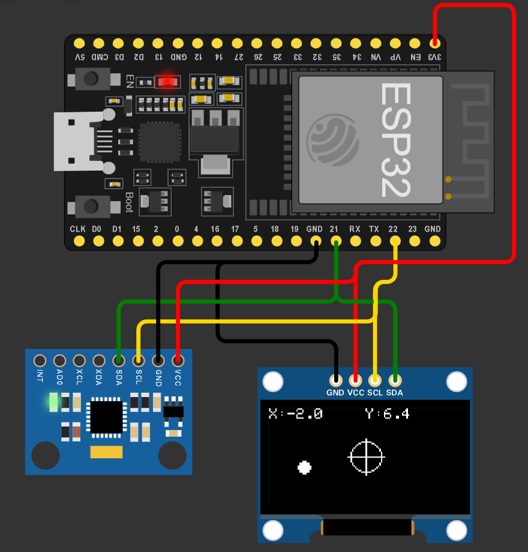

Proyecto integrador: una estación de pruebas para UAV
Integrar módulos ya estudiados en un sistema de banco con requisitos y pruebas trazables.
El proyecto empieza en las clases anteriores
La integración recoge un portafolio que ya creció durante el curso: circuito y medida, entrada digital, agenda, conversión, señal de mando, sensor e interpretación. No se empieza comprando todas las piezas en la clase 15. Cada equipo elige un propósito y conserva el perfil de hardware disponible. El resultado debe poder explicarse con un esquema y comprobarse con un conjunto pequeño de pruebas.

La opción principal es una estación de IMU y estado: adquiere datos, conserva tiempo y validez, presenta una salida y genera un registro de serie. La ampliación añade un mando analógico o una interfaz de consulta. Como alternativa, un equipo con motor, driver y encoder puede integrar el banco de velocidad con los módulos ya comprobados. La selección depende de componentes y objetivos; no cambia el nivel de exigencia sobre explicación y evidencia.
El curso se puede seguir con simulación y bancos compartidos. El kit facilita el trabajo personal y se entrega a quienes lo soliciten con inventario confirmado. Esa condición comercial no obliga a afirmar que todos los asistentes construyeron físicamente todas las variantes. El expediente identifica el modo real de cada prueba.
Requisitos que permiten ensayar
Proyecto principal de estación
| Requisito | Prueba | Evidencia |
|---|---|---|
| Identificar sensor | Inicio con y sin módulo | Estado registrado |
| Adquirir periódicamente | Observar marcas de tiempo | CSV |
| Separar dato y validez | Vencer una lectura | Estado de fallo |
| Presentar estado | Ver salida y registro | Coincidencia explicada |
| Cambio propio | Comparar dos versiones | Código y conclusión |
Un requisito como “que funcione bien” no define una comprobación. Una condición observable podría ser “si no existe una muestra reciente, el registro indica dato no válido”. Para probarla se define qué antigüedad acepta el caso, cómo se inyecta la ausencia y dónde se observa el cambio. El valor de 250 ms del ejemplo es una condición didáctica del banco, no un tiempo universal de sistemas UAV.
Requisito ambiguo
El equipo escribe “detectar cualquier fallo”. ¿Cómo lo convierte en una prueba de esta etapa?
Ver razonamiento del caso
Elige una condición concreta: ausencia al inicializar, dirección sin respuesta, lectura vencida o rango no plausible. Describe el método y la evidencia sin prometer diagnóstico de toda causa posible.
Módulos y responsabilidades
El código se organiza en adquisición, procesamiento, estado y presentación. Un dato aceptado lleva su instante; la tarea de pantalla no cambia ese origen. La tabla de pines corresponde a la versión final y reemplaza las conexiones de ejercicios anteriores. El semáforo, la OLED y la IMU no se acumulan sobre los mismos GPIO sin revisar su función y sus conflictos.
Perfil del ejemplo integrado
| Elemento | Conexión de referencia | Función |
|---|---|---|
| IMU I2C | SDA21 / SCL22 | Adquisición |
| Entrada analógica | GPIO34 / ADC1 | Lectura de mando |
| LED con resistor | GPIO23 | Estado del dato |
| Puerto serie | USB–UART de la placa | Registro |
La variante de motor conserva, además, el eje y las cuentas por vuelta del encoder, las alimentaciones del driver y los límites de mando. El controlador solo se evalúa después de comprobar medida y sentido de acción. Las curvas del modelo de la clase 11 ayudan a formular la prueba, pero sus ganancias no se trasladan como una promesa de respuesta del hardware.
La base de cámara y el ascensor quedan como ampliaciones de estados y posicionamiento. Sus esquemas publicados requieren unificar motor y driver con el código antes de construir. No se mezclan A4988 de STEP/DIR y una secuencia de cuatro salidas para otro tipo de motor como si fueran la misma interfaz.
Lectura del ejemplo integrado
Lógica principal de c15_integrador
bool valid = ready && haveSample
&& uint32_t(now-lastValid) <= 250;
state = valid ? State::READY : State::FAULT;
digitalWrite(LED, valid);
// El archivo completo conserva INICIO antes de la primera muestra.
// El registro incluye secuencia, tiempo, estado y unidades.El ejemplo comprueba respuesta de bus antes de actualizar el registro. Esta prueba aporta presencia de comunicación en esa operación; no demuestra integridad absoluta de todas las medidas. La plausibilidad numérica y la antigüedad son criterios separados. La estimación angular conserva las hipótesis de la práctica cuasiestática. El alumno debe poder explicar exactamente qué significa data_valid en su propia versión.
El botón queda reservado para una ampliación individual: reconocer un aviso, registrar un marcador o cambiar una presentación. No se da crédito por añadir una línea cuyo comportamiento nadie puede explicar. La modificación se describe como requisito y se prueba con el mismo cuidado que la versión de referencia.
Una marca temporal falsa
El equipo actualiza lastValid cada vez que imprime, aunque la lectura haya fallado. ¿Qué ocurre con el criterio de antigüedad?
Ver razonamiento del caso
Deja de medir edad de la muestra y pasa a medir edad de la impresión. La aplicación puede seguir declarando reciente un dato que ya no lo es.
Laboratorio de integración por hitos
- Elige estación de sensores o banco de velocidad según recursos confirmados.
- Congela una tabla de pines y dibuja energía, señal y referencia.
- Ejecuta cada módulo por separado y conserva su resultado.
- Integra dos módulos y comprueba primero una condición normal.
- Añade el estado de dato y una prueba de ausencia o vencimiento.
- Introduce una modificación propia con un requisito observable.
- Prepara el expediente y la demostración del taller final.
Hitos de la entrega
| Hito | Condición de revisión |
|---|---|
| A: subsistemas | Cada uno explica su dato |
| B: integración | Referencias coherentes |
| C: diagnóstico | Fallo tratado de forma explícita |
| D: modificación | Comportamiento propio ensayado |
Si aparece un fallo durante integración, se vuelve al último hito comprobado y se cambia una condición. Conservar una versión funcional permite investigar sin borrar la referencia. Un registro de cambio pequeño es suficiente: qué se modificó, qué se esperaba y qué se observó. La documentación acompaña la construcción en lugar de inventarse al final.
Preparación de la defensa
La demostración debe comenzar por el propósito y el objeto, no por recorrer todas las líneas de código. El equipo presenta una entrada, una transformación y una salida; muestra una condición normal y una condición que cambia el estado; después explica una decisión y su evidencia. Cada integrante responde una pregunta individual sobre su parte. Esa defensa permite distinguir comprensión de reproducción mecánica.
Dos modos de evidencia
Un equipo aporta simulación y otro montaje real. ¿Qué se compara en común y qué se identifica por separado?
Ver razonamiento del caso
Se comparan requisitos, coherencia del código, interpretación y análisis. Se identifica por separado qué prueba física realizó cada equipo y qué condiciones reales pudo observar.
Para investigar, selecciona una ampliación: una pantalla, un registro persistente, una comunicación o un mecanismo. Explica qué interfaz y qué comprobaciones nuevas exige. La siguiente versión se propone con un motivo técnico vinculado al propósito, sin convertir una lista de componentes más larga en una mejora automática.
Práctica guiada
- Mostrar el portafolio acumulado y elegir un propósito concreto.
- Revisar la tabla de pines y los requisitos del equipo.
- Comprobar c15_integrador y una modificación propia.
- Preparar prueba normal, prueba de fallo y defensa.
Preguntas de cierre
¿Se actualiza lastValid al imprimir?
Se actualiza al aceptar una adquisición nueva bajo el criterio definido.
¿Puede integrarse sin revisar pines de las clases previas?
No. La configuración final necesita su propio mapa y revisión de conflictos.
¿Qué identifica una modificación útil?
Un propósito, un requisito observable y una prueba que lo comprueba.
Entrega
Primera versión integrada, mapa de pines, cuatro hitos y plan de demostración.
Proyectos MECRO relacionados
- 11. Radar de Exploración · Núcleo. Barrido servo y distancia Abrir referencia Wokwi
- 13. Base de Cámara (Stepper) · Extensión corregida. 28BYJ48 + ULN2003 o bipolar + driver, rutas distintas Abrir referencia Wokwi
- 14. Ascensor de 3 Pisos · Caso y extensión. Estados; homing y driver por corregir Abrir referencia Wokwi
- 16. Nivel de Burbuja Digital · Núcleo. IMU estática y datos válidos Abrir referencia Wokwi
- 17. Mando de Vuelo (Flight Controller) · Núcleo corregido. Mando y demostración P de banco Abrir referencia Wokwi
Fuentes para ampliar
[MECRO] MECRO. Laboratorio Electrónica con ESP32: veinte proyectos.
[GPIO] Espressif Systems. GPIO y restricciones de ESP32 clásico.
[WIRE] Espressif Systems. Arduino-ESP32: I2C.
[FBS] Åström y Murray. Feedback Systems: An Introduction for Scientists and Engineers; edición electrónica de los autores.
[WOKWI] Wokwi. ESP32 Simulation: periféricos y límites.